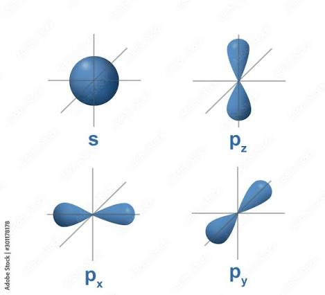

Because the Bohr Theory failed to describe atoms with many electrons, Modern Atomic Theory introduced four quantum numbers to properly define electron energy levels.
- Principal Quantum Number (n): Relates to the distance between the nucleus and the principal energy levels (Shells K, L, M, N corresponding to n = 1, 2, 3, 4). The maximum number of electrons in an orbital is 2n2.
- Secondary Quantum Number (l): Represents sub-levels and dictates the shape of the electron cloud. If l = 0, the shape is spherical (s orbital); if l = 1, the shape is a dumbbell (p orbital). The number of sub-shells equals n.
- Magnetic Quantum Number (m): Represents the direction of maximum extension in space for dumbbell-shaped clouds (p, d, and f). It has (2l + 1) different values.
- Spin Quantum Number (s): Represents electron spin, possessing values of +1/2 (clockwise) or -1/2 (counterclockwise).

Electron Configuration Rules
Three strict rules govern how electrons fill these energy levels:
- Pauli Exclusion Principle: No two electrons in a single atom can have all four quantum numbers be identical.
- Aufbau Principle: Sub-levels with the lowest energy are completely filled before higher energy levels. The filling sequence is: 1s, 2s, 2p, 3s, 3p, 4s, 3d, 4p, 5s.
- Hund's Rule: The p, d, and f sublevels are first occupied by single electrons before any pairing of electrons with opposed spins takes place.
Exceptions: Chromium (Cr-24) and Copper (Cu-29) organize into 4s1 3d5 and 4s1 3d10 respectively, as this arrangement represents a lower-energy, more stable state than strictly following the sequence.
Practice Exercises
Test your knowledge on Quantum Numbers.
1. Which quantum number dictates the physical shape of the electron cloud (e.g., spherical or dumbbell)?
A) Principal Quantum Number (n)
B) Secondary Quantum Number (l)
C) Magnetic Quantum Number (m)
2. According to the formula 2n2, what is the maximum number of electrons that can fit in the M shell (n = 3)?
A) 8
B) 18
C) 32
3. Which principle states that no two electrons in an atom can have the exact same set of four quantum numbers?
A) Pauli Exclusion Principle
B) Aufbau Principle
C) Hund's Rule
4. What is the stable, exceptional electron configuration for Copper (Cu-29)?
A) 4s2 3d9
B) 4s2 3d4
C) 4s1 3d10